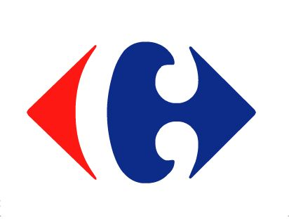
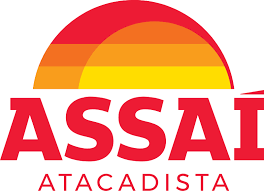
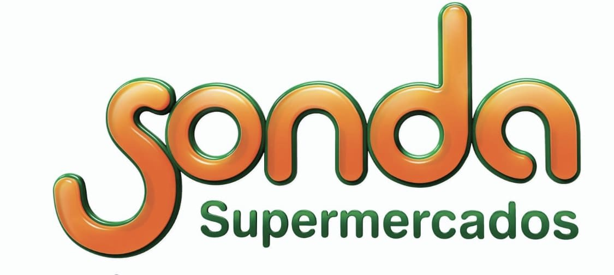
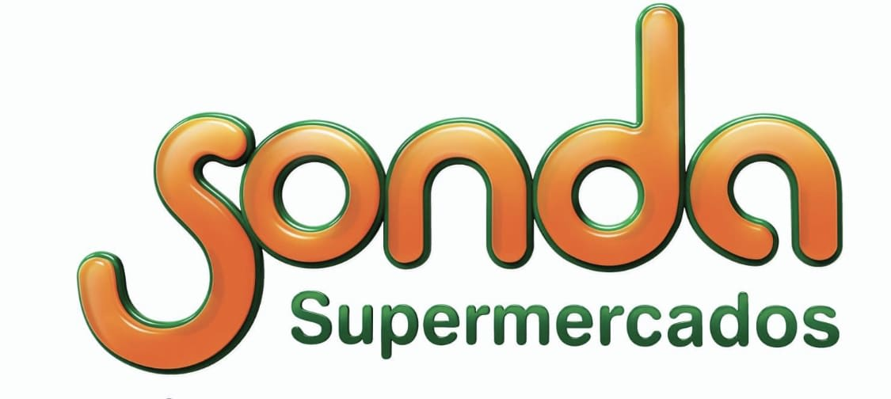

Clientes que já se beneficiaram de nossos serviços!
Em um mercado competitivo e dinâmico como o varejo alimentício, a gestão eficiente do estoque é crucial para o sucesso operacional e a satisfação do cliente. Nosso serviço de gestão de estoque tem o orgulho de contar com a confiança e parceria de alguns dos principais nomes do setor. Entre nossos estimados clientes estão:
Assai Atacadista: Uma referência em atacado de autosserviço no Brasil, o Assaí Atacadista confia em nossa expertise para garantir a disponibilidade de produtos e otimizar sua cadeia de suprimentos, oferecendo sempre o melhor atendimento aos seus clientes.
Carrefour: Reconhecido internacionalmente pela qualidade e variedade de seus produtos, o Carrefour escolheu nosso serviço para aprimorar sua gestão de estoque, assegurando a excelência em cada compra realizada em suas unidades.
Pão Açúcar: Como uma das maiores redes de supermercados do país, o Pão de Açúcar busca constantemente a excelência em seus processos. Estamos honrados em ser parte desse esforço, contribuindo para manter seus estoques sempre atualizados e eficientes.
Roldão Atacadista: Conhecido pela sua vasta gama de produtos e preços competitivos, o Roldão Atacadista confia em nossa tecnologia para manter sua operação fluindo sem contratempos, atendendo às demandas de seus clientes da melhor forma possível.
Sonda Supermercados: Com uma história de tradição e qualidade, os Supermercados Sonda escolheram nossa solução de gestão de estoque para garantir a disponibilidade dos produtos em suas prateleiras, oferecendo uma experiência de compra ainda mais satisfatória.
Spani Atacadista: Presente em diversas regiões do Brasil, o Spani Atacadista confia em nosso serviço para manter seus estoques otimizados, garantindo que seus clientes encontrem sempre o que precisam com facilidade e agilidade.
Com cada um desses clientes, compartilhamos o compromisso de oferecer soluções de alto nível e resultados tangíveis. Estamos dedicados a continuar nossa trajetória de sucesso, ajudando empresas a alcançar e superar seus objetivos de gestão de estoque.

  
